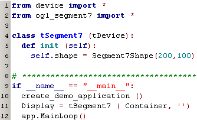
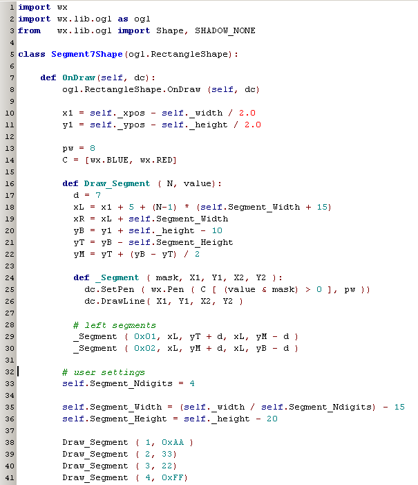
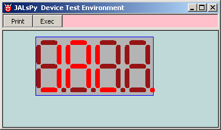
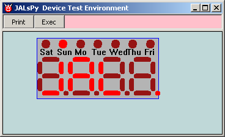
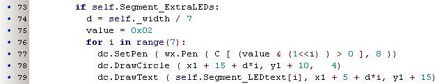
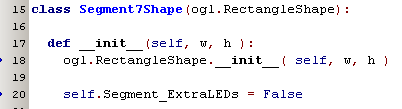
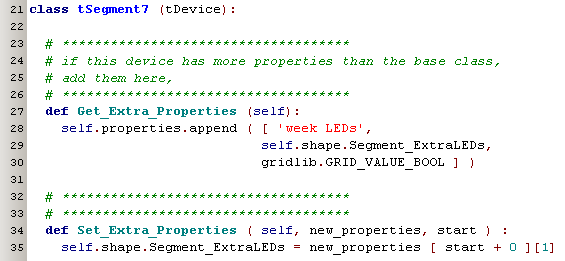
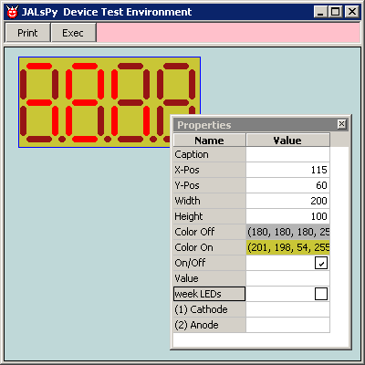
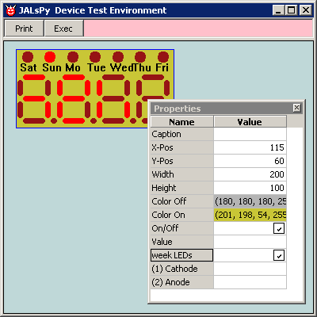
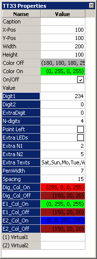

july 2007
JALsPy, 7-Segment LED Device
Introduction
This document describes the creation of a somewhat more complex component: a multi-digit 7-segment LED Device. Although the resulting code is not much more than 100 lines, you'll need some basic understanding of the wxPython libraries. This document is not a perfect educational document on how to write a new component, it are just my notes during the stage when I created my first real new shape.
Because there's no standard shape that can be used for the 7-segment display, we'll need to derive a new visible component. So first we start looking for a ogl-shape, that we can use as a ancestor for our new component. In this case we simply take the Rectangle as the ancestor. Another thing to do, is to make an JALsPy device library for the 7-segment display. Let's start with the latter one, so we can easily test our newly created device.

Isn't this very small ?
Lines 4 .. 6: the code to expose the newly created shape "Segment7Shape" as the new device "tSegment7" to JALsPy.
Lines 9 .. 12: code to run this library as a stand-alone test-program (not strictly needed)
By giving this library the right name (starting with "device_") and placing it in the JALsPy directory, JALsPy will find this file and recognize "tSegment7" as a device. So you don't have to do anything extra to make the new device available in JALsPy !!
Next thing to do is to create the visible component. We already decided to derive it from Rectangle, so lookup the code of Rectangle and although there's more I don't understand than I do understand, I quickly see that the OnDraw method is the method that should be overridden. Even the code in this section is magic to me, but don't bother I'll just inherit the whole code and just add my extra code. After some fiddling with code, seeing all kind of beautiful drawings on the screen, I end up with this code:

and before to explain some of the code let's first look at the result, by just running device_Segment7.py:

Not too bad.
So let's look at some of the code lines:
Line 1 .. 3: well line 1 and 2 are standard imports for all ogl-shapes, line 3 is not invented by me, but is directed by the debugger, when I ran the module the first time
Line 5: here we derive our new visual component from the Rectangle shape
Line 7: and here we're going to override the OnDraw method
Line 8: because I didn't understand completely what was done in the OnDraw event, and it couldn't heart to leave what was inside of that method, I just call the ancestors version of the OnDraw method, before I proceed with my own additions.
Line 10,11: copied from the ancestor, because that seems to be the way to get the coordinates of our rectangle
until now, I still haven't really created 1 line of original code, so let's start some creative activities:
Line 13,14: I define some penwidth (pw) and the on/off colors of the segments (in a later stage of the development, these values should be set by the user)
Line 16 .. 30: Because I need to produce more than 1 digit display, I create a procedure ("Draw_Segment", wrong name) that will display all segments of 1 digit. For clarity, here only the code for the left segments is shown (line 29,30). And because changing a pen's color is rather inconvenient, we even create a small procedure for that "_ Segment"
Line 38 .. 41: we just give some random values to be displayed
So that where about 30 lines of creative code, no magic, just plain Python !!
Now I forgot one very important line:
this comment line is uncommented during development. The reason is that I don't know what methods and properties "dc" has, so by redefining it, the code-editor I use (PyScripter, but most code-editors will do that) will suggest all possibilities !!!
The best thing to do now, is to first optimize the visual shape and all it's flexibility. By doing this we get to know all user properties which we should expose later on.
In my specific case, I want a fifth digit to be used as the day of the week, displayed with 7 LEDs above the normal digits. So after some extra code (about 10 lines) I get the following result:

and for who's interested, here is the extra code

With this result I'm quit satisfied, ok maybe scaling should be a little better and of course colors should be improved, but that's much easier if we can use the properties editor of JALsPy itself. So let's add some user defined properties, the first extra parameter I'm going to add is the toggle flag that changes between the 2 display forms, with or without extra LEDs on the top.

We have to override the initialization of the shape (line 17). Of course we want to keep all initialization of the base class, so we call it explicitly (line 18). Then we add our flag and give it a default value (line 20), of course we use "self" here, so all procedures in this class can reach this variable.
Next thing is to add the new flag to the device, like this:

Get_Extra_Properties is called by JALsPy whenever it needs them, e.g. when the user want to edit the properties of this device. Set_Extra_Properties is called when one of the parameters is changed by JALsPy. Now asking for the properties of the device, will show our extra added property "week LEDs, and by checking the checkbox, we see right away what the effect of that flag is. The parameters in both the methods should be in the same order. JALsPy also ensures that these settings are automatically stored and reloaded from the ini-file.
 
Now we can add and test all other extra properties, we want to be able to set, and finally end up with the highlighted list in the picture below:
|
 |
Extra LEDs are the extra normal LEDs, that will appear on top of the digits. You can divide these extra LED's in two parts, the left N1 and the right N2, both these sets have their own on / off colors. bla bla |